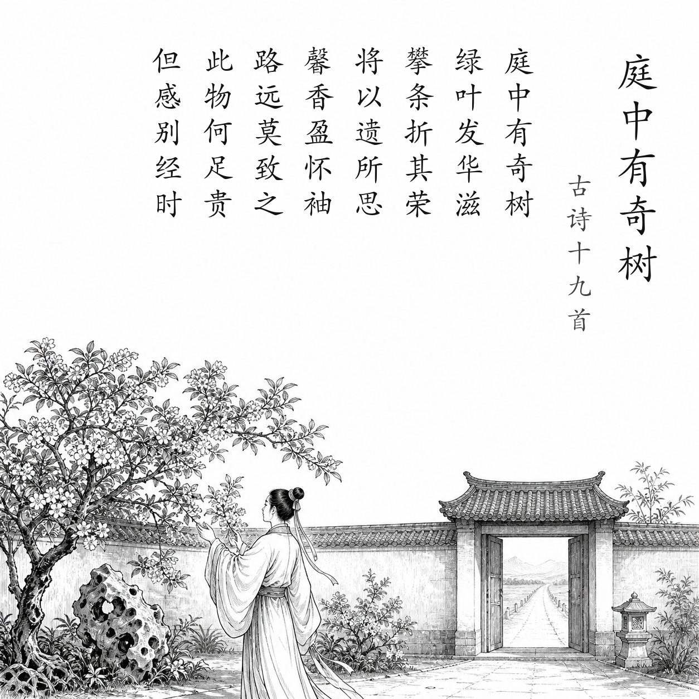
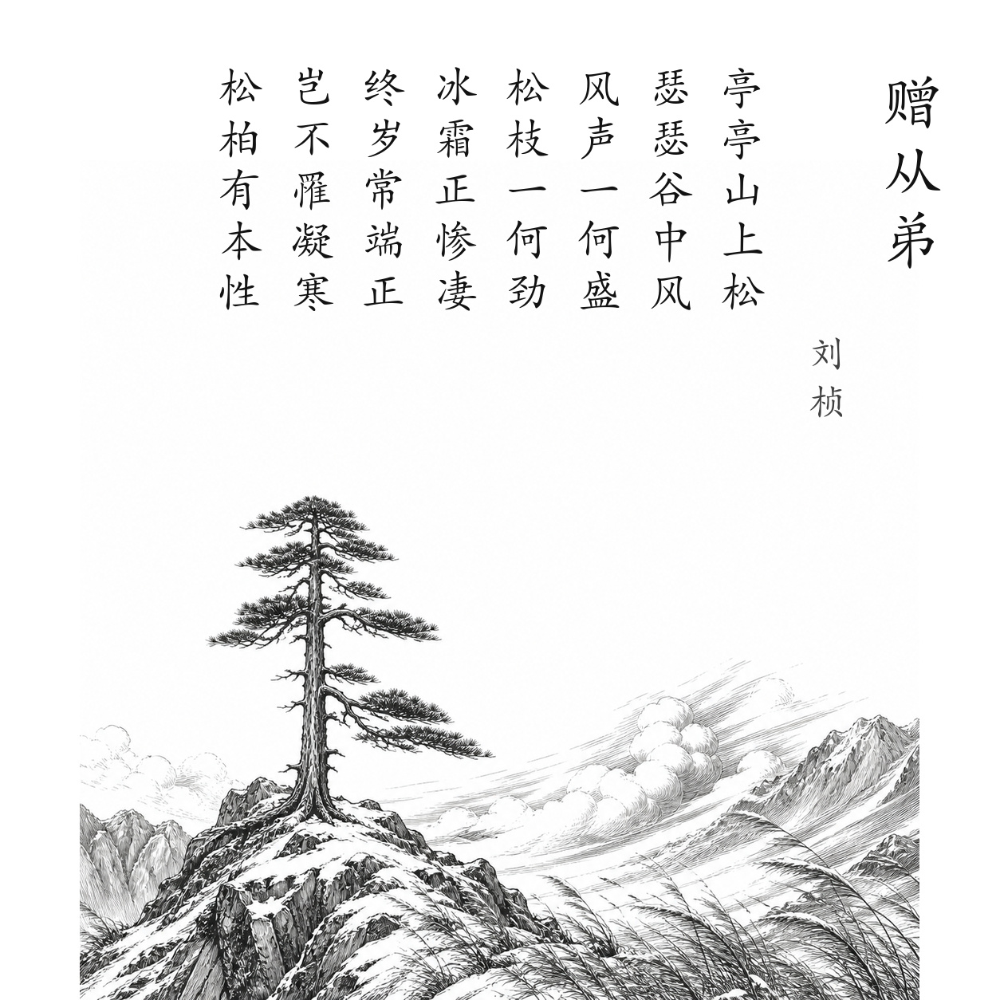
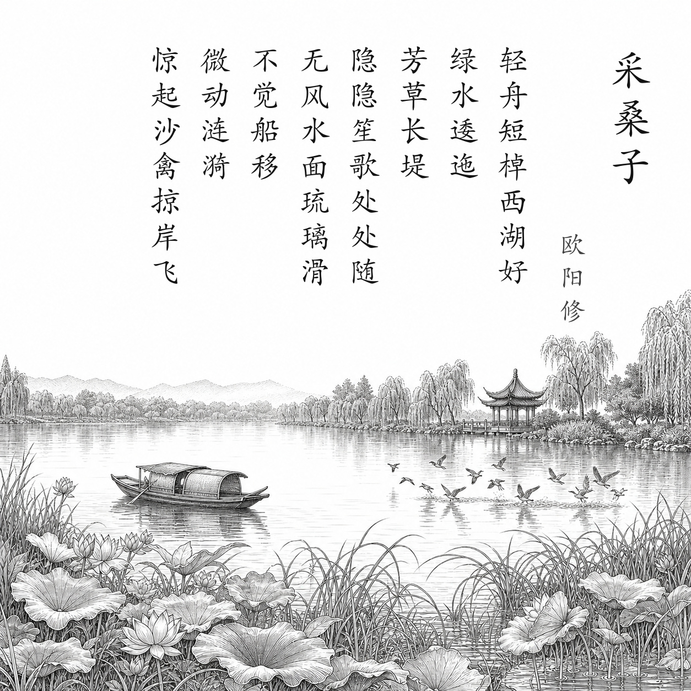
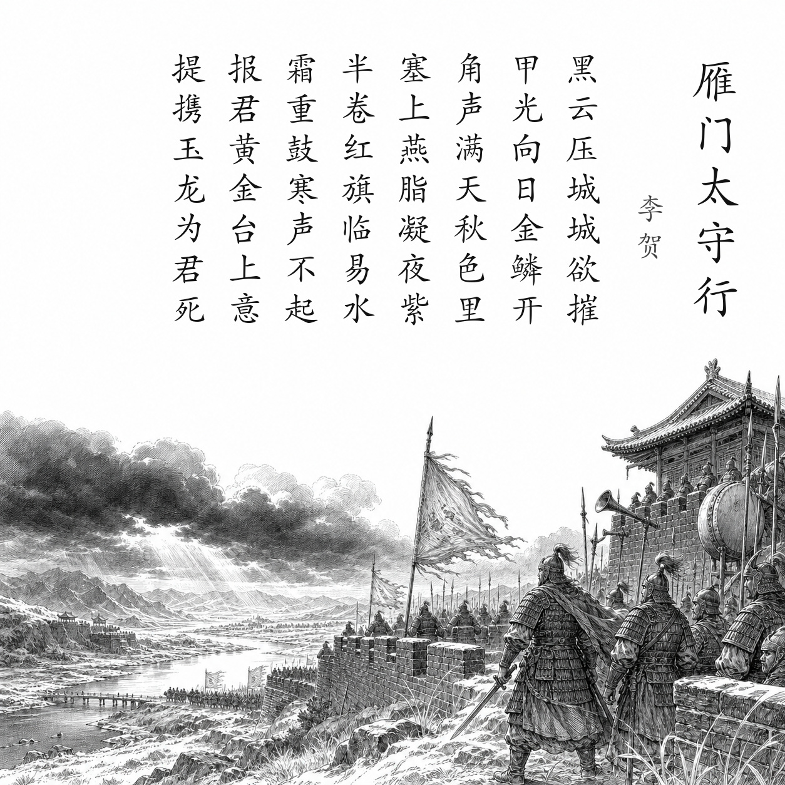
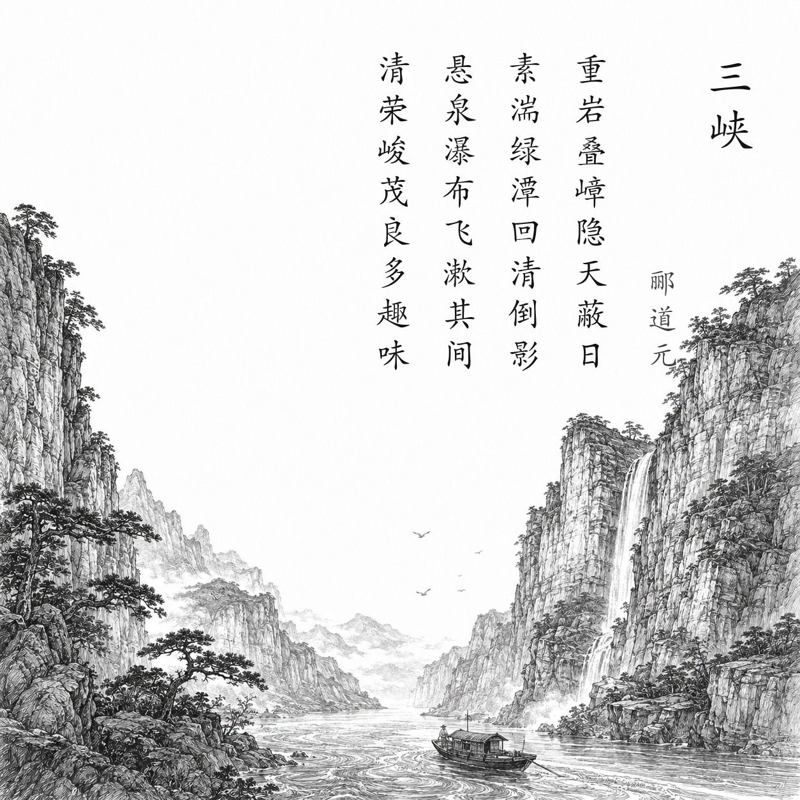
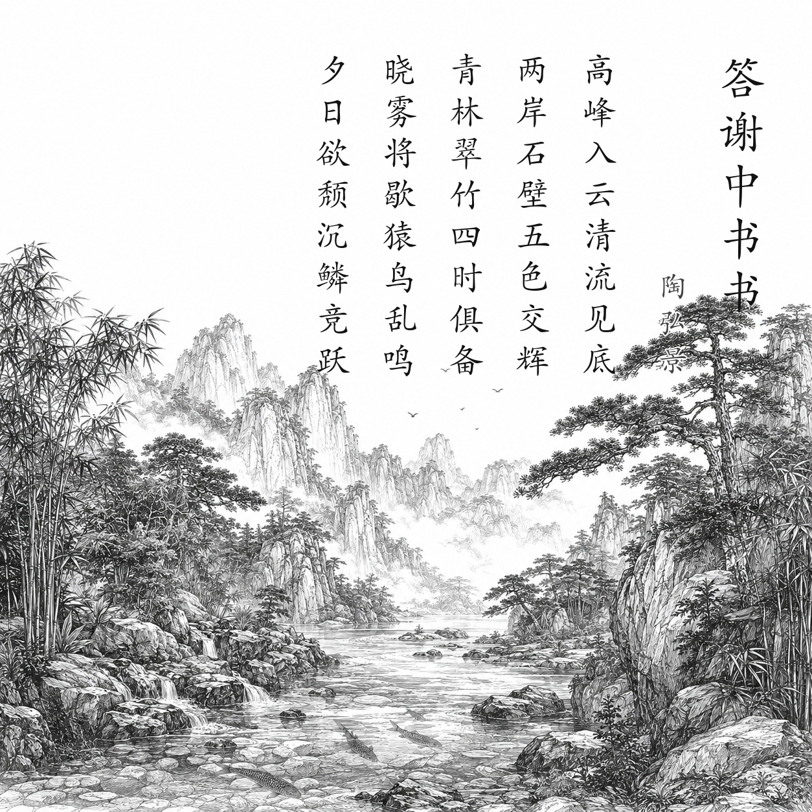
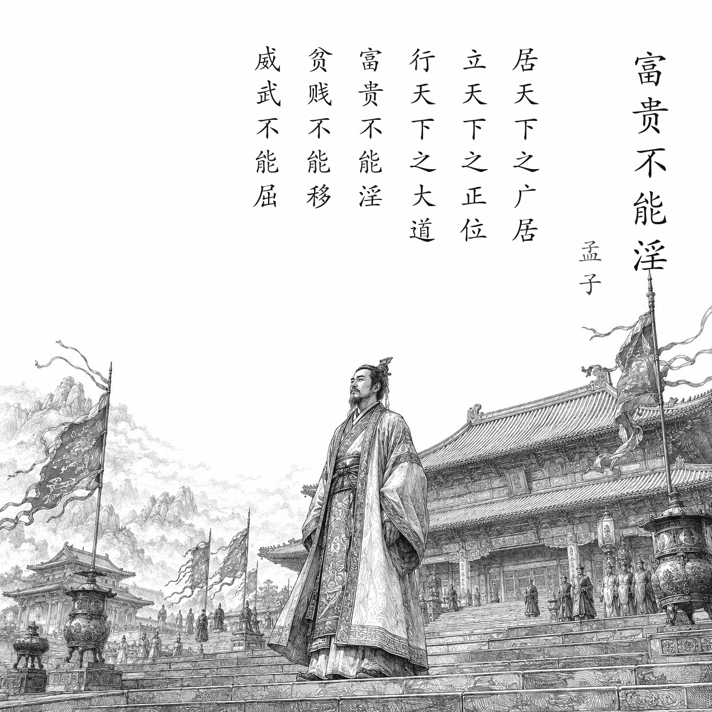

古诗文学习小站
从一幅画，
走进一篇古诗文。
读原文，也读作者当时走过的路、见过的景，以及落笔时的人生处境。
卷
篇目总览26 篇 · 点击任一篇目开始阅读

01→
赤壁
唐 · 杜牧

02→
如梦令
宋 · 李清照

03→
相见欢
宋 · 朱敦儒

04→
野望
唐 · 王绩

05→
使至塞上
唐 · 王维

06→
渡荆门送别
唐 · 李白

07→
庭中有奇树
东汉末 · 佚名

08→
赠从弟（其二）
汉末 · 刘桢

09→
梁甫行
魏 · 曹植

10→
春望
唐 · 杜甫

11→
浣溪沙
宋 · 晏殊

12→
采桑子
宋 · 欧阳修

13→
饮酒（其五）
东晋 · 陶渊明

14→
黄鹤楼
唐 · 崔颢

15→
钱塘湖春行
唐 · 白居易

16→
龟虽寿
汉末 · 曹操

17→
雁门太守行
唐 · 李贺

18→
渔家傲
宋 · 李清照

19→
三峡
北魏 · 郦道元

20→
答谢中书书
南朝梁 · 陶弘景

21→
记承天寺夜游
北宋 · 苏轼

22→
与朱元思书
南朝梁 · 吴均

23→
得道多助，失道寡助
战国 · 孟子及其弟子

24→
富贵不能淫
战国 · 孟子及其弟子

25→
生于忧患，死于安乐
战国 · 孟子及其弟子

26→
愚公移山
战国至秦汉间 · 《列子》作者群